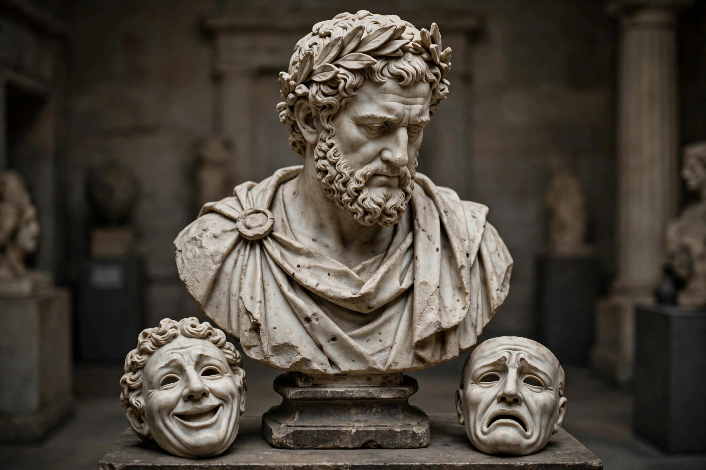

Menander (c. 342/341 – c. 290 BC) was a Greek dramatist, the foremost author of Athenian New Comedy. He wrote more than a hundred plays, of which only one, the Dyskolos ("The Grouch"), survives complete, along with substantial fragments of others recovered from Egyptian papyri in the 20th century. Through the Roman adaptations of Plautus and Terence, his domestic plots — young lovers, blocking fathers, clever slaves, foundlings and recognitions — became the template of Western comedy.
| Menander | |
|---|---|
| Born | c. 342/341 BC, Athens |
| Died | c. 290 BC (drowned near Piraeus, by tradition) |
| Genre | New Comedy |
| Complete survivor | Dyskolos (staged 316 BC) |
Menander was a wealthy Athenian, said to have studied under the philosopher Theophrastus and to have been a companion of Epicurus. He first competed at the City Dionysia around 321 BC and won the first of his eight victories with the Dyskolos at the Lenaia of 316 BC. He declined invitations from kings, including Ptolemy I of Egypt, preferring Athens, and was associated with the hetaera Glycera.
Famous titles include the Aspis ("Shield"), Epitrepontes ("The Arbitration"), Perikeiromene ("The Girl with Her Hair Cut Short") and Samia ("The Woman from Samos"). In antiquity he was ranked second only to Homer in some judgments, and hundreds of quotable lines circulated as maxims. His works were lost in the Byzantine period but papyrus finds — above all the Cairo Codex of 1905 and the Bodmer papyrus that restored the Dyskolos in 1957 — returned him to the stage and the syllabus.
Menander replaced the political satire and fantasy of Old Comedy with realistic middle-class households, sympathetic characterisation and plots driven by chance and recognition. His influence flows through Roman comedy into Molière, Shakespearean romantic comedy and the modern situation comedy.
See also: New Comedy · Terence